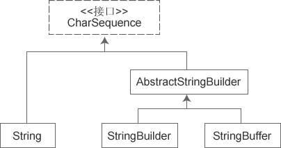
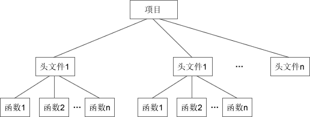
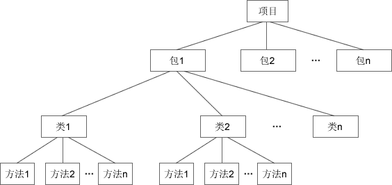

J2SE、J2EE、J2ME
J2SE（Java 2 Platform Standard Edition）标准版
J2SE 主要用于开发客户端（桌面应用软件），如：常用的文本编辑器、下载软件、即时通讯工具等。
J2SE 包含了 Java 的核心类库，如数据库连接、接口定义、输入/输出、网络编程等。
J2EE（Java 2 Platform Enterprise Edition）企业版
J2EE 是功能最丰富的一个版本，主要用于开发高访问量、大数据量、高并发量的网站，如：美团、去哪儿网的后台。通常所说的 JSP 开发就是 J2EE 的一部分。
J2EE 包含 J2SE 中的类，还包含用于开发企业级应用的类，如：EJB、servlet、JSP、XML、事务控制等。
J2EE 也可以用来开发技术比较庞杂的管理软件，如：ERP 系统（Enterprise Resource Planning，企业资源计划系统）。
J2ME（Java 2 Platform Micro Edition）微型版
J2ME 只包含 J2SE 中的一部分类，受平台影响比较大，主要用于嵌入式系统和移动平台的开发，如：呼机、智能卡、手机、机顶盒等。
在智能手机还没有进入公众视野时，摩托罗拉、诺基亚等手机上很多 Java 小游戏就是用 J2ME 开发的。
Java 的初衷就是做这一块的开发。
注：Android 手机有自己的开发组件，不使用 J2ME 进行开发。
Java 5.0 后，J2SE、J2EE、J2ME 分别更名为 Java SE、Java EE、Java ME，由于习惯，我们依然称之为 J2SE、J2EE、J2ME。
JRE、JDK
JRE（Java Runtime Environment）运行时环境
包含了 Java 虚拟机，Java 基础类库。是使用 Java 语言编写的程序运行所需要的软件环境，是提供给想运行 Java 程序的用户使用的。如果需要运行 Java 程序，只需安装 JRE 即可。
根据不同操作系统（如：Windows、Linux等）和不同提供商（IBM、ORACLE等），JRE 有很多版本，最常用的是 Oracle 公司收购 SUN 公司的 JRE 版本。
JDK（Java Development Kit）开发工具包
是程序员使用 Java 语言编写 Java 程序所需的开发工具包，是提供给程序员使用的。JDK 包含了 JRE，同时还包含了编译 Java 源码的编译器 Javac，还包含了很多 Java 程序调试和分析的工具：Jconsole，Jvisualvm 等工具软件，Java 程序编写所需的文档和 Demo 例子程序。如果需要编写 Java 程序，即需要安装 JDK。
语法基础
Java 是一种强类型的语言，声明变量时必须指明数据类型。变量（variable）的值占据一定的内存空间。不同类型的变量占据不同的大小。
语法比较简单，重点说下：StringBuffer 与 StringBuider。
String 的值是不可变的，每次对 String 的操作都会生成新的 String 对象，不仅效率低，而且耗费大量内存空间。
StringBuffer
StringBuffer 类和 String 类一样，也用来表示字符串，但是 StringBuffer 的内部实现方式和 String 不同，在进行字符串处理时，不生成新的对象，在内存使用上要优于 String。
StringBuffer 默认分配 16 字节长度的缓冲区，当字符串超过该大小时，会自动增加缓冲区长度，而不是生成新的对象。
StringBuffer 只能通过 new 来创建。
1 | // 分配默认的16个字节长度的缓冲区 |
主要方法
StringBuffer 类中的方法主要偏重于对于字符串的操作，例如追加、插入和删除等，这个也是 StringBuffer 类和 String 类的主要区别。实际开发中，如果需要对一个字符串进行频繁的修改，建议使用 StringBuffer。
append()：向当前字符串的末尾追加内容，类似于字符串的连接。调用该方法以后，StringBuffer 对象的内容也发生改变。
1 | StringBuffer str = new StringBuffer("biancheng100"); |
对象 str 的值将变成 “biancheng100true”
注意是 str 指向的内容变了，不是 str 的指向变了
字符串的 “+” 操作实际上也是先创建一个 StringBuffer 对象，
然后调用 append() 方法将字符串片段拼接起来，最后调用 toString() 方法转换为字符串
这样看来，String 的连接操作就比 StringBuffer 多出了一些附加操作，效率上必然会打折扣
但是，对于长度较小的字符串，”+” 操作更加直观，更具可读性，有些时候可以稍微牺牲一下效率
deleteCharAt()：删除指定位置的字符，并将剩余的字符形成新的字符串。
1 | StringBuffer str = new StringBuffer("abcdef"); |
delete()：方法一次性删除多个字符。
1 | StringBuffer str = new StringBuffer("abcdef"); |
insert()：在指定位置插入字符串，可以认为是 append() 的升级版。
1 | StringBuffer str = new StringBuffer("abcdef"); |
setCharAt()：修改指定位置的字符。
1 | StringBuffer str = new StringBuffer("abcdef"); |
StringBuilder
StringBuffer 线程安全；StringBuilder 线程不安全。
StringBuffer、StringBuilder、String 中都实现了 CharSequence 接口。
CharSequence 是一个定义字符串操作的接口，它只包括 length()、charAt(int index)、subSequence(int start, int end) 这几个API。
StringBuffer、StringBuilder、String 对 CharSequence 接口的实现过程不一样：

String 直接实现了 CharSequence 接口；
StringBuilder 和 StringBuffer 都是可变的字符序列，它们都继承于 AbstractStringBuilder，实现了 CharSequence 接口。
面向对象编程（OOP）
Java 中的类可以看做 C 语言中结构体的升级版。
结构体是一种构造数据类型，可以包含不同的成员（变量），每个成员的数据类型可以不一样；可以通过结构体来定义结构体变量，每个变量拥有相同的性质。
1 |
|
Java 中的类也是一种构造数据类型，但是进行了一些扩展，类的成员不但可以是变量，还可以是函数；通过类定义出来的变量也有特定的称呼，叫做“对象”。
1 | public class Demo { |
在 C 语言中，通过结构体名称就可以完成结构体变量的定义，并分配内存空间；
但在 Java 中，仅仅通过类来定义变量不会分配内存空间，必须使用 new 关键字来完成内存空间的分配。
类的变量：属性（通常也称成员变量），函数：方法。它们统称为类的成员。
类可以比喻成图纸，对象比喻成产品，图纸说明了产品的参数及其承担的任务；一张图纸可以生产出具有相同性质的产品，不同图纸可以生产不同类型的产品。
使用 new 关键字，就可以通过类来创建对象，即将图纸生产成产品，这个过程叫做类的实例化，因此也称对象是类的一个实例。
注：类只是一张图纸，起到说明的作用，不占用内存空间；对象才是具体的产品，要有地方来存放，才会占用内存空间。
在 C 语言中，可以将完成某个功能的重复使用的代码块定义为函数，将具有一类功能的函数声明在一个头文件中，不同类型的函数声明在不同的头文件，以便对函数进行更好的管理，方便编写和调用。

在 Java 中，可以将完成某个功能的代码块定义为方法，将具有相似功能的方法定义在一个类中，也就是定义在一个源文件中（因为一个源文件只能包含一个公共的类），多个源文件可以位于一个文件夹，这个文件夹有特定的称呼，叫做包。

面向对象编程在软件执行效率上绝对没有任何优势，它的主要目的是方便程序员组织和管理代码，快速梳理编程思路，带来编程思想上的革新。
访问修饰符/访问控制符
| 修饰符 | 说明 |
|---|---|
| public | 共有的，对所有类可见。 |
| protected | 受保护的，对同一包内的类和所有子类可见。 |
| private | 私有的，在同一类内可见。 |
| 默认 | 在同一包内可见。默认不使用任何修饰符。 |
public：类、方法、构造方法和接口能够被任何其他类访问。类的继承性，类所有的公有方法和变量都能被其子类继承。
protected：方法和成员变量能够声明为 protected，不能修饰接口。
子类能访问 protected 修饰符声明的方法和变量，这样就能保护不相关的类使用这些方法和变量。
private：方法、变量和构造方法只能被所属类访问，并且类和接口不能声明为 private。声明为私有访问类型的变量只能通过类中公共的 Getter/Setter 方法被外部类访问。主要用来隐藏类的实现细节和保护类的数据。
默认：接口里的变量都隐式声明为 public static final，而接口里的方法默认情况下访问权限为 public。
方法继承规则：
- 父类中声明为 public 的方法在子类中也必须为 public。
- 父类中声明为 protected 的方法在子类中要么声明为 protected，要么声明为 public。不能声明为 private（即不能越来越隐秘，只能越来越公开）。
- 父类中默认修饰符声明的方法，能够在子类中声明为 private。
- 父类中声明为 private 的方法，不能够被继承（实际是继承了，但是无法访问）。
变量的作用域
类级变量/全局级变量/静态变量：使用 static 关键字修饰。类级变量在类定义后就已经存在，占用内存空间，可以通过类名来访问，不需要实例化。
对象实例级变量：成员变量，实例化后才会分配内存空间，才能访问。
方法级变量：在方法内部定义的变量，就是局部变量。
块级变量：定义在一个块内部的变量（指由大括号包围的代码），变量的生存周期就是这个块，出了这个块就消失了，比如 if、for 语句的块。
1 | public class Demo { |
运行：
demo
name=demo, i=0, j=3
方法重载
方法重载（method overloading）：同一个类中的多个方法有相同的名称，但它们的参数列表不同。
不同包括：个数、类型和顺序。
- 仅仅参数变量名称不同是不可以的。
- 跟成员方法一样，构造方法也可以重载。
- 声明为 final 的方法不能被重载。
- 声明为 static 的方法不能被重载，但是能够被再次声明。
重载的规则：
- 方法名称必须相同。
- 参数列表必须不同。
- 方法的返回类型可以相同也可以不相同。
- 仅仅返回类型不同不足以成为方法的重载。
重载是面向对象的一个基本特性。
方法签名：方法名称 + 参数列表（顺序和类型）。
注：方法签名不包括：方法的返回类型，返回值和访问修饰符。
常见应用：重载和重写。
1 | public class Demo { |
重载的实现：方法名称相同时，编译器会根据调用方法的参数个数、参数类型等去逐个匹配，以选择对应的方法；如果匹配失败，编译器会报错，这叫做重载分辨。
程序的基本运行顺序
1 | public class Demo { |
顺序：
- 先运行到第 8 行，这是程序的入口。
- 然后运行到第 9 行，这里要 new 一个Demo，就要调用 Demo 的构造方法。
- 就运行到第 4 行，注意：初始化一个类，必须先初始化它的属性。
- 因此运行到第 2 行，然后是第 3 行。
- 属性初始化完过后，才回到构造方法，执行里面的代码，也就是第 5 行、第 6 行。
- 然后是第 9 行，表示 new 一个Demo实例完成。
- 然后回到 main 方法中执行第 10 行。
- 然后是第 11 行，main方法执行完毕。
总结：程序入口 -> 类属性 -> 构造方法
复杂情况下的初始化：
- 父类中的静态成员变量和静态代码块，按照在程序中出现的顺序初始化；
- 子类中的静态成员变量和静态代码块，按照在程序中出现的顺序初始化；
- 父类的普通成员变量和代码块，再执行父类的构造方法；
- 子类的普通成员变量和代码块，再执行子类的构造方法；
包装类、拆箱和装箱
| 基本数据类型 | 对应的包装类 |
|---|---|
| boolean | Boolean |
| byte | Byte |
| short | Short |
| int | Integer |
| long | Long |
| char | Character |
| float | Float |
| double | Double |
| 基本数据类型 | 占用的字节数 | 取值范围 | 默认值 |
|---|---|---|---|
| boolean | 1 | ture / flase | flase |
| byte | 1 | -128 ~ 127 | 0 |
| short | 2 | -2^15 ~ 2^15-1 | 0 |
| int | 4 | -2^31 ~ 2^31-1 | 0 |
| long | 8 | -2^63 ~ 2^63-1 | 0 |
| char | 2 | 0 ~ 2^16-1 | \u0000 |
| float | 4 | 0x0.000002P-126f ~ 0x1.fffffeP+127f | 0.0f |
| double | 8 | 0x0.0000000000001P-1022 ~ 0x1.fffffffffffffP+1023 | 0.0d |
基本类型和对应的包装类相互装换：
- 装箱：由基本类型向对应的包装类转换，如把 int 包装成 Integer 类的对象。
- 拆箱：包装类向对应的基本类型转换，如把 Integer 类的对象重新简化为 int。
Java 1.5 前必须手动拆箱装箱：
1 | public class Demo { |
Java 1.5 后系统自动拆箱装箱：
1 | public class Demo { |
继承
继承（extends）是类与类之间的关系，是一个很简单很直观的概念，与现实世界中的继承（例如儿子继承父亲财产）类似。
继承可以理解为一个类从另一个类获取方法和属性的过程。如果类 B 继承于类 A，那么 B 就拥有 A 的方法和属性。
1 | class People { |
注：构造方法不能被继承。一个类能得到构造方法，只有两个办法：编写构造方法，或者根本没有构造方法，类有一个默认的构造方法。
super
功能：
- 调用父类中声明为 private 的变量。
- 获取已经覆盖了的方法。
- 作为方法名表示父类构造方法。
1 | public class Demo { |
move() 方法也可以定义在某些祖先类中，比如父类的父类，Java 具有追溯性，会一直向上找，直到找到该方法为止。
通过 super 调用父类的隐藏变量，必须要在父类中声明 getter 方法，因为声明为 private 的数据成员对子类是不可见的。
1 | public class Demo { |
注：
- 在构造方法中调用另一个构造方法，调用动作必须置于最起始的位置。
- 不能在构造方法以外的任何方法内调用构造方法。
- 在一个构造方法内只能调用一个构造方法。
如果编写一个构造方法，既没有调用 super() 也没有调用 this()，编译器会自动插入一个调用到父类构造方法中，而且不带参数。
继承中方法的覆盖和重载
1 | public class Demo { |
覆盖原则：
- 覆盖方法的返回类型、方法名称、参数列表必须与原方法的相同。
- 覆盖方法不能比原方法访问性差（即访问权限不允许缩小）。
- 覆盖方法不能比原方法抛出更多的异常。
- 被覆盖的方法不能是 final 类型，因为 final 修饰的方法是无法覆盖的。
- 被覆盖的方法不能为 private，否则在其子类中只是新定义了一个方法，并没有对其进行覆盖。
- 被覆盖的方法不能为 static。（覆盖是基于运行时动态绑定的，而 static 方法是编译时静态绑定的。static 方法跟类的任何实例都不相关，所以概念上不适用）
覆盖和重载的不同：
- 方法覆盖要求参数列表必须一致，而方法重载要求参数列表必须不一致。
- 方法覆盖要求返回类型必须一致，方法重载对此没有要求。
- 方法覆盖只能用于子类覆盖父类的方法，方法重载用于同一个类中的所有方法（包括从父类中继承而来的方法）。
- 方法覆盖对方法的访问权限和抛出的异常有特殊的要求，而方法重载在这方面没有任何限制。
- 父类的一个方法只能被子类覆盖一次，而一个方法可以在所有的类中可以被重载多次。
多态
父类的变量可以引用父类的实例，也可以引用子类的实例。
1 | public class Demo { |
obj 变量的类型为 Animal，它既可以指向 Animal 类的实例，也可以指向 Cat 和 Dog 类的实例。也就是说，父类的变量可以引用父类的实例，也可以引用子类的实例。注意反过来是错误的，因为所有的猫都是动物，但不是所有的动物都是猫。
obj 既可以是人类，也可以是猫、狗，它有不同的表现形式，这就被称为多态。多态是指一个事物有不同的表现形式或形态。
多态存在的三个必要条件：要有继承、要有重写、父类变量引用子类对象。
当使用多态方式调用方法时：
- 首先检查父类中是否有该方法，如果没有，则编译错误；如果有，则检查子类是否覆盖了该方法。
- 如果子类覆盖了该方法，就调用子类的方法，否则调用父类方法。
1 | public class Demo { |
Master 类的 feed 方法有两个参数，分别是 Animal 类型和 Food 类型，因为是父类，所以可以将子类的实例传递给它，这样 Master 类就不需要多个方法来给不同的动物喂食。
instanceof
判断对象类型：
1 | public final class Demo { |
static
static 修饰符能够与变量、方法一起使用，表示静态。
静态变量和静态方法能够通过类名来访问，不需要创建一个类的对象来访问该类的静态成员，所以 static 修饰的成员又称作类变量和类方法。
静态变量与实例变量不同，实例变量总是通过对象来访问，因为它们的值在对象和对象之间有所不同。
static 的内存分配
- 静态变量属于类，不属于任何独立的对象，所以无需创建类的实例就可以访问静态变量。
- 编译器只为整个类创建了一个静态变量的副本，也就是只分配一个内存空间，虽然有多个实例，但这些实例共享该内存（类变量）。
- 实例变量则不同，每创建一个对象，都会分配一次内存空间，不同变量的内存相互独立，互不影响。
1 | public class Demo { |
注：
- 静态变量也可以通过对象来访问，但不提倡，编译器也会产生警告。
- 静态变量在类装载的时候就会被初始化。也就是说，只要类被装载，不管你是否使用了这个 static 变量，它都会被初始化，并占用内存。
以下情形可以使用静态方法：
- 方法不需要访问对象状态，其所需参数都是通过显式参数提供，比如 Math.pow()。
- 方法只需要访问类的静态变量。
总结：
- 静态方法只能访问静态变量；
- 静态方法不能够直接调用非静态方法；
- 如访问控制权限允许，静态变量和静态方法也可以通过对象来访问，但不被推荐；
- 静态方法中不存在当前对象，因而不能使用 this，当然也不能使用 super；
- 静态方法不能被非静态方法覆盖；
- 构造方法不允许声明为 static；
- 局部变量不能使用 static 修饰。
静态初始器/静态块(Static Initializer)
静态初始器是一个存在于类中、方法外面的静态块。静态初始器仅仅在类装载的时候执行一次，往往用来初始化静态变量。
1 | public class Demo { |
静态导入：对于使用频繁的静态变量和静态方法，可以将其静态导入，简化一些操作，例如输出语句 System.out.println(); 中的 out 就是 System 类的静态变量。
1 | import static packageName.className.methonName; // 导入某个特定的静态方法 |
1 | import static java.lang.System.*; |
问：是否可以在 static 环境中访问非 static 变量？
答：static 变量在 Java 中是属于类的，它在所有的实例中的值是一样的。当类被 Java 虚拟机载入的时候，会对 static 变量进行初始化。如果你的代码尝试不用实例来访问非 static 的变量，编译器会报错，因为这些变量还没有被创建出来，还没有跟任何实例关联上。
final
final 所修饰的数据具有“终态”的特征，表示“最终”。规定如下：
- 修饰的类不能被继承。
- 修饰的方法不能被子类重写。
- 修饰的变量（成员变量或局部变量）即成为常量，只能赋值一次。
- 修饰的成员变量必须在声明的同时赋值，如果在声明的时候没有赋值，那么只有一次赋值的机会，而且只能在构造方法中显式赋值，然后才能使用。
- 修饰的局部变量可以只声明不赋值，然后再进行一次性的赋值。
1 | public final class Demo { |
注：
- 一旦将一个类声明为 final，那么该类包含的方法也将被隐式地声明为 final，但是变量不是。
- 被 final 修饰的方法为静态绑定，不会产生多态（动态绑定），程序在运行时不需要再检索方法表，能够提高代码的执行效率。
- 被 static 或 private 修饰的方法会被隐式的声明为 final。
内部类
内部类（Inner Class）/嵌套类（Nested Class）：在一个类（或方法、语句块）的内部定义另一个类。
内部类和外层封装它的类之间存在逻辑上的所属关系，一般只用在定义它的类或语句块之内，实现一些没有通用意义的功能逻辑，在外部引用它时必须给出完整的名称。
使用内部类的原因：
- 内部类可以访问外部类中的数据，包括私有的数据。
- 内部类可以对同一个包中的其他类隐藏起来。
- 当想要定义一个回调函数且不想编写大量代码时，使用匿名（anonymous）内部类比较便捷。
- 减少类的命名冲突。
1 | public class Outer { |
注：必须先有外部类的对象才能生成内部类的对象，因为内部类需要访问外部类中的成员变量，成员变量必须实例化才有意义。
静态内部类、匿名内部类、成员式内部类和局部内部类
http://www.weixueyuan.net/view/6007.html
abstract
在自上而下的继承层次结构中，位于上层的类更具有通用性，甚至可能更加抽象。
从某种角度看，祖先类更加通用，它只包含一些最基本的成员，人们只将它作为派生其他类的基类，而不会用来创建对象。甚至，你可以只给出方法的定义而不实现，由子类根据具体需求来具体实现。
这种只给出定义而不具体实现的方法被称为抽象方法，抽象方法是没有方法体的，在代码的表达上就是没有“{}”。包含一个或多个抽象方法的类也必须被声明为抽象类。
使用 abstract 修饰符来表示抽象方法和抽象类。
抽象类除了包含抽象方法外，还可以包含具体的变量和具体的方法。类即使不包含抽象方法，也可以被声明为抽象类，防止被实例化。
抽象类不能被实例化，抽象方法必须在子类中被实现。
1 | public class Demo { |
关于抽象类的几点说明：
- 抽象类不能直接使用，必须用子类去实现抽象类，然后使用其子类的实例。然而可以创建一个变量，其类型是一个抽象类，并让它指向具体子类的一个实例，也就是可以使用抽象类来充当形参，实际实现类作为实参，也就是多态的应用。
- 不能有抽象构造方法或抽象静态方法。
在下列情况下，一个类将成为抽象类：
- 当一个类的一个或多个方法是抽象方法时；
- 当类是一个抽象类的子类，并且不能为任何抽象方法提供任何实现细节或方法主体时；
- 当一个类实现一个接口，并且不能为任何抽象方法提供实现细节或方法主体时。
注：这里说的是这些情况下一个类将成为抽象类，没有说抽象类一定会有这些情况。
一个典型的错误：抽象类一定包含抽象方法。
但是反过来说：“包含抽象方法的类一定是抽象类”就是正确的。
事实上，抽象类可以是一个完全正常实现的类。
interface
在抽象类中，可以包含一个或多个抽象方法；但在接口（interface）中，所有的方法必须都是抽象的，不能有方法体，它比抽象类更加“抽象”。
接口使用 interface 关键字来声明，可以看做是一种特殊的抽象类，可以指定一个类必须做什么，而不是规定它如何去做。
现实中也有很多接口的实例，比如说串口电脑硬盘，Serial ATA委员会指定了Serial ATA 2.0规范，这种规范就是接口。Serial ATA委员会不负责生产硬盘，只是指定通用的规范。
希捷、日立、三星等生产厂家会按照规范生产符合接口的硬盘，这些硬盘就可以实现通用化，如果正在用一块160G日立的串口硬盘，现在要升级了，可以购买一块320G的希捷串口硬盘，安装上去就可以继续使用了。
模拟 Serial ATA 委员会定义以下串口硬盘接口：
1 | // 串行硬盘接口 |
注：接口中声明的成员变量默认都是 public static final，因而在常量声明时可以省略这些修饰符。
接口是若干常量和抽象方法的集合，目前看来和抽象类差不多。确实如此，接口本就是从抽象类中演化而来的，因而除特别规定，接口享有和类同样的“待遇”。比如，源程序中可以定义多个类或接口，但最多只能有一个 public 的类或接口，如果有则源文件必须取和 public 的类和接口相同的名字。和类的继承格式一样，接口之间也可以继承，子接口可以继承父接口中的常量和抽象方法并添加新的抽象方法等。
但接口有其自身的一些特性，归纳如下：
- 接口中只能定义抽象方法，试图在接口中定义实例变量、非抽象的实例方法及静态方法，都是非法的。例如：
1 | public interface SataHdd { |
接口中没有构造方法，不能被实例化。
一个接口不实现另一个接口，但可以继承多个其他接口。
接口的多继承特点弥补了类的单继承：
1 | // 串行硬盘接口 |
为什么使用接口
大型项目开发中，可能需要从继承链的中间插入一个类，让它的子类具备某些功能而不影响它们的父类。
比如继承链：A -> B -> C -> D -> E。
A 是祖先类，如果需要为 C、D、E 类添加某些通用的功能，最简单的方法是让 C 类再继承另外一个类。
但问题来了，Java 是一种单继承的语言，不能再让 C 继承另外一个父类了，只能让继承链的最顶端 A 再继承一个父类。这样一来，对 C、D、E 类的修改，影响到了整个继承链，不具备可插入性的设计。
接口是可插入性的保证。在一个继承链中的任何一个类都可以实现一个接口，这个接口会影响到此类的所有子类，但不会影响到此类的任何父类。此类将不得不实现这个接口所规定的方法，而子类可以从此类自动继承这些方法，这时候，这些子类具有了可插入性。
我们关心的不是哪一个具体的类，而是这个类是否实现了我们需要的接口。
接口提供了关联以及方法调用上的可插入性，软件系统的规模越大，生命周期越长，接口使得软件系统的灵活性和可扩展性，可插入性方面得到保证。
接口在面向对象的 Java 程序设计中占有举足轻重的地位。事实上在设计阶段最重要的任务之一就是设计出各部分的接口，然后通过接口的组合，形成程序的基本框架结构。
接口的使用
接口的使用与类的使用有些不同。在需要使用类的地方，会直接使用 new 关键字来构建一个类的实例，但接口不可以这样使用，因为接口不能直接使用 new 关键字来构建实例。
注：
- 接口必须通过类来实现（implements）它的抽象方法，然后再实例化类。
- 如果一个类不能实现该接口的所有抽象方法，那么这个类必须被定义为抽象方法。
- 不允许创建接口的实例，但允许定义接口类型的引用变量，该变量指向了实现接口的类的实例。
- 一个类只能继承一个父类，但却可以实现多个接口。
实现接口的格式：
1 | 修饰符 class 类名 extends 父类 implements 多个接口（A, B...） { |
例子：
1 | public class Demo { |
接口作为类型使用
接口作为引用类型来使用，任何实现该接口的类的实例都可以存储在该接口类型的变量中，通过这些变量可以访问类中所实现的接口中的方法，Java 运行时系统会动态地确定应该使用哪个类中的方法，实际上是调用相应的实现类的方法。
接口可以作为一个类型来使用，如作为方法的参数和返回类型：
1 | public class Demo { |
接口和抽象类的区别
类是对象的模板，抽象类和接口可以看做是具体的类的模板。
由于从某种角度讲，接口是一种特殊的抽象类，它们的渊源颇深，有很大的相似之处，所以在选择使用谁的问题上很容易迷糊。
相同点：
- 都代表类树形结构的抽象层。在使用引用变量时，尽量使用类结构的抽象层，使方法的定义和实现分离，这样做对于代码有松散耦合的好处。
- 都不能被实例化。
- 都能包含抽象方法。抽象方法用来描述系统提供哪些功能，而不必关心具体的实现。
区别：
- 抽象类可以为部分方法提供实现，避免了在子类中重复实现这些方法，提高了代码的可重用性，这是抽象类的优势；而接口中只能包含抽象方法，不能包含任何实现。
1 | public abstract class A { |
再换成接口看看：
1 | public interface A { |
- 一个类只能继承一个直接的父类（可能是抽象类），但一个类可以实现多个接口，这个就是接口的优势。
1 | // 接口类 |
综上所述，接口和抽象类各有优缺点，在接口和抽象类的选择上，必须遵守：行为模型应该总是通过接口而不是抽象类定义，所以通常是优先选用接口，尽量少用抽象类。
选择抽象类的时候通常是如下情况：需要定义子类的行为，又要为子类提供通用的功能。
泛型
使用变量之前要定义，定义一个变量时必须要指明它的数据类型，什么样的数据类型赋给什么样的值。
假如我们现在要定义一个类来表示坐标，要求坐标的数据类型可以是整数、小数和字符串，例如：
1 | x = 10、y = 10 |
针对不同的数据类型，除了借助方法重载，还可以借助自动装箱和向上转型。我们知道，基本数据类型可以自动装箱，被转换成对应的包装类；Object 是所有类的祖先类，任何一个类的实例都可以向上转型为 Object 类型：
1 | int --> Integer --> Object |
这样，只需要定义一个方法，就可以接收所有类型的数据。
1 | public class Demo { |
上面的代码中，生成坐标时不会有任何问题，但是取出坐标时，要向下转型，在 Java 多态对象的类型转换中我们讲到，向下转型存在风险，而且编译期间不容易发现，只有在运行期间才会抛出异常，所以要尽量避免使用向下转型。运行上面的代码，第12行会抛出 java.lang.ClassCastException 异常。
如何既可以不使用重载（有重复代码），又能把风险降到最低呢？
使用泛型类(Java Class)，它可以接受任意类型的数据。所谓“泛型”，就是“宽泛的数据类型”，任意的数据类型。
更改上面的代码，使用泛型类：
1 | public class Demo { |
与普通类的定义相比，上面的代码在类名后面多出了 <T1, T2>，T1, T2 是自定义的标识符，也是参数，用来传递数据的类型，而不是数据的值，我们称之为类型参数。在泛型中，不但数据的值可以通过参数传递，数据的类型也可以通过参数传递。T1, T2 只是数据类型的占位符，运行时会被替换为真正的数据类型。
传值参数（我们通常所说的参数）由小括号包围，如 (int x, double y)，类型参数（泛型参数）由尖括号包围，多个参数由逗号分隔，如
类型参数需要在类名后面给出。一旦给出了类型参数，就可以在类中使用了。
类型参数必须是一个合法的标识符，习惯上使用单个大写字母，通常情况下：K 表示键、V 表示值、E 表示异常或错误、T 表示一般意义上的数据类型。
泛型类在实例化时必须指出具体的类型，也就是向类型参数传值：
1 | className variable<dataType1, dataType2> = new className<>(); |
注：
- 泛型是 Java 1.5 的新增特性，它以 C++ 模板为参照，本质是参数化类型（Parameterized Type）的应用。
- 类型参数只能用来表示引用类型，不能用来表示基本类型，如 int、double、char 等。但是传递基本类型不会报错，因为它们会自动装箱成对应的包装类。
泛型方法
除了定义泛型类，还可以定义泛型方法，例如，定义一个打印坐标的泛型方法：
1 | public class Demo { |
上面的代码中定义了一个泛型方法 printPoint()，既有普通参数，也有类型参数，类型参数需要放在修饰符后面、返回值类型前面。一旦定义了类型参数，就可以在参数列表、方法体和返回值类型中使用了。
与使用泛型类不同，使用泛型方法时不必指明参数类型，编译器会根据传递的参数自动查找出具体的类型。泛型方法除了定义不同，调用就像普通方法一样。
注：
泛型方法与泛型类没有必然的联系，泛型方法有自己的类型参数，在普通类中也可以定义泛型方法。泛型方法 printPoint() 中的类型参数 T1, T2 与泛型类 Point 中的 T1, T2 没有必然的联系，也可以使用其他的标识符代替：
1 | public static <V1, V2> void printPoint(V1 x, V2 y) { |
泛型接口
在 Java 中也可以定义泛型接口，这里不再赘述，仅仅给出示例代码：
1 | public class Demo { |
类型擦除
如果在使用泛型时没有指明数据类型，那么就会擦除泛型类型：
1 | public class Demo { |
因为在使用泛型时没有指明数据类型，为了不出现错误，编译器会将所有数据向上转型为 Object，所以在取出坐标使用时要向下转型，这与本文一开始不使用泛型没什么两样。
限制泛型的可用类型
在上面的代码中，类型参数可以接受任意的数据类型，只要它是被定义过的。但是，很多时候我们只需要一部分数据类型就够了，用户传递其他数据类型可能会引起错误。
例如，编写一个泛型函数用于返回不同类型数组（Integer 数组、Double 数组、Character 数组等）中的最大值：
1 | public <T> T getMax(T array[]) { |
上面的代码会报错，doubleValue() 是 Number 类的方法，不是所有的类都有该方法，所以我们要限制类型参数 T，让它只能接受 Number 及其子类（Integer、Double、Character 等）。
通过 extends 关键字可以限制泛型的类型：
1 | // <T extends Number> 表示 T 只接受 Number 及其子类，传入其他类型的数据会报错 |
注：
- extends 后可以是类也可以是接口。如果是类，只能有一个；如果是接口，可以有多个，并以“&”分隔，如
<T extends Interface1 & Interface2>。 - extends 不是继承的含义，应该理解为 T 是继承自 Number 类的类型，或者 T 是实现了 XX 接口的类型。
? 泛型通配符
在类型擦除中我们定义了泛型类 Point<T1, T2> 来表示坐标，坐标可以是整数、小数或字符串：
1 | class Point<T1, T2> { |
现在要求在其他类，比如 APoint 类定义一个 printPoint() 方法用于输出坐标，怎么办？可以这样定义方法：
1 | public void printPoint(Point p) { |
但如果在使用泛型时没有指名具体的数据类型，就会擦除泛型类型，并向上转型为 Object，这与不使用泛型没什么两样。上面的代码没有指明数据类型，相当于：
1 | public void printPoint(Point<Object, Object> p) { |
为了避免类型擦除，可以使用通配符 ?（可以表示任意的数据类型）：
1 | public void printPoint(Point<?, ?> p) { |
完整代码：
1 | public class Demo { |
但是，数字坐标与字符串坐标又有区别：数字可以表示 x 轴或 y 轴的坐标，字符串可以表示地球经纬度。
现在又要求定义两个方法分别处理不同的坐标，一个方法只能接受数字类型的坐标，另一个方法只能接受字符串类型的坐标，怎么办？
这个问题的关键是要限制类型参数的范围：
1 | public class Demo { |
<? extends Number> 表示泛型的类型参数只能是 Number 及其子类，<? extends String> 也一样，这与定义泛型类或泛型方法时限制类型参数的范围类似。
不过，使用通配符 ? 不但可以限制类型的上限，还可以限制下限。限制下限使用 super 关键字，例如 <? super Number> 表示只能接受 Number 及其父类。
异常处理
Java 异常是一个描述在代码段中发生的异常（也就是出错）情况的对象。当异常情况发生，一个代表该异常的对象被创建并且在导致该错误的方法中被抛出（throw）。该方法可以选择自己处理异常或传递该异常。两种情况下，该异常被捕获（caught）并处理。异常可能是由 Java 运行时系统产生，或者是由你的手工代码产生。被 Java 抛出的异常与违反语言规范或超出 Java 执行环境限制的基本错误有关。手工编码产生的异常基本上用于报告方法调用程序的出错状况。
Java 异常处理通过5个关键字控制：try、catch、throw、throws、finally。
声明你想要的异常监控包含在一个 try 块中。如果在 try 块中发生异常，它被抛出。你的代码可以捕捉这个异常（catch）并且用某种合理的方法处理该异常。系统产生的异常被 Java 运行时系统自动抛出。手动抛出一个异常，用关键字 throw。任何被抛出方法的异常都必须通过 throws 子句定义。任何在方法返回前绝对被执行的代码被放置在 finally 块中。
下面是一个异常处理块的通常形式：
1 | try { |
所有异常类型都是内置类 Throwable 的子类。因此 Throwable 在异常类层次结构的顶层。紧接着 Throwable 下面的是两个把异常分成两个不同分支的子类：Exception、Error。
Exception：用于用户程序可能捕捉的异常情况。它也是你可以用来创建你自己用户异常类型子类的类。在 Exception 分支中有一个重要子类 RuntimeException 运行时异常。业务中可能出现的自定义异常可以通过继承该类实现。
Error：定义了在通常环境下不希望被程序捕获的异常。用于 Java 运行时系统来显示与运行时系统本身有关的错误，比如：堆栈溢出。这里不讨论关于 Error 类型的异常处理，因为它们通常是灾难性的致命错误，不是你的程序可以控制的。
异常处理这块不是特别难：http://www.weixueyuan.net/java/rumen_7/
多线程
操作系统课有讲大致原理，这里主要讲在 Java 原理和应用，最好看懂课本理解好多线程内容。
线程模型
线程优先级
Java 给每个线程安排优先级以决定与其他线程比较时该如何对待该线程。
线程优先级是详细说明线程间优先关系的整数。作为绝对值，优先级是毫无意义的；当只有一个线程时，优先级高的线程并不比优先权低的线程运行的快。相反，线程的优先级是用来决定何时从一个运行的线程切换到另一个。这叫“上下文转换”(context switch)。决定上下文转换发生的规则（最高优先级优先算法）：
线程可以自动放弃控制。在I/O未决定的情况下，睡眠或阻塞由明确的让步来完成。在这种假定下，所有其他的线程被检测，准备运行的最高优先级线程被授予CPU。
线程可以被高优先级的线程抢占。在这种情况下，低优先级线程不主动放弃，处理器只是被先占——无论它正在干什么——处理器被高优先级的线程占据。基本上，一旦高优先级线程要运行，它就执行。这叫做有优先权的多任务处理。
注：不同的操作系统下相同优先级线程的上下文转换可能会产生错误。
同步性
因为多线程在你的程序中引入了一个异步行为，所以在你需要的时候必须有加强同步性的方法。
比如，你希望两个线程相互通信并共享一个复杂的数据结构，例如链表序列，你需要某些方法来确保它们没有相互冲突。也就是说，你必须防止一个线程写入数据而另一个线程正在读取链表中的数据。为此目的，Java 在进程间同步性的老模式基础上实行了另一种方法：管程（monitor）。管程是一种由 C.A.R.Hoare 首先定义的控制机制。
你可以把管程想象成一个仅控制一个线程的小盒子。一旦线程进入管程，所有线程必须等待直到该线程退出了管程。用这种方法，管程可以用来防止共享的资源被多个线程操纵。
很多多线程系统把管程作为程序必须明确的引用和操作的对象。Java 提供一个清晰的解决方案。没有“Monitor”类；相反，每个对象都拥有自己的隐式管程，当对象的同步方法被调用时管程自动载入。一旦一个线程包含在一个同步方法中，没有其他线程可以调用相同对象的同步方法。这就使你可以编写非常清晰和简洁的多线程代码，因为同步支持是语言内置的。
消息传递
在你把程序分成若干线程后，你就要定义各线程之间的联系。用大多数其他语言规划时，你必须依赖于操作系统来确立线程间通信。这样当然增加花费。然而，Java 提供了多线程间谈话清洁的、低成本的途径——通过调用所有对象都有的预先确定的方法。Java 的消息传递系统允许一个线程进入一个对象的一个同步方法，然后在那里等待，直到其他线程明确通知它出来。
主线程
当 Java 程序启动时，一个线程立刻运行，该线程通常叫做程序的主线程（main thread），因为它是程序开始时就执行的。
主线程的重要性体现在两方面：
- 它是产生其他子线程的线程；
- 通常它必须最后完成执行，因为它执行各种关闭动作。
尽管主线程在程序启动时自动创建，但它可以由一个 Thread 对象控制。可以通过 currentThread() 获得它的一个引用。
currentThread() 是 Thread 类的公有的静态成员，该方法返回一个调用它的线程的引用：
1 | static Thread currentThread( ) |
一旦你获得主线程的引用，你就可以像控制其他线程那样控制主线程：
1 | class CurrentThreadDemo { |
线程优先级
线程优先级被线程调度用来判定何时每个线程允许运行。理论上，优先级高的线程比优先级低的线程获得更多的 CPU 时间。实际上，线程获得的CPU时间通常由包括优先级在内的多个因素决定（例如，一个实行多任务处理的操作系统如何更有效的利用 CPU 时间）。
一个优先级高的线程自然比优先级低的线程优先。举例来说，当低优先级线程正在运行，而一个高优先级的线程被恢复（例如从沉睡中或等待 I/O 中），它将抢占低优先级线程所使用的 CPU。
理论上，等优先级线程有同等的权利使用 CPU。但你必须小心了。记住，Java 是被设计成能在很多环境下工作的。一些环境下实现多任务处理从本质上与其他环境不同。为安全起见，等优先级线程偶尔也受控制。这保证了所有线程在无优先级的操作系统下都有机会运行。实际上，在无优先级的环境下，多数线程仍然有机会运行，因为很多线程不可避免的会遭遇阻塞，例如等待输入输出。遇到这种情形，阻塞的线程挂起，其他线程运行。
但是如果你希望多线程执行的顺利的话，最好不要采用这种方法。同样，有些类型的任务是占 CPU 的。对于这些支配 CPU 类型的线程，有时你希望能够支配它们，以便使其他线程可以运行。
设置线程的优先级：
1 | /* |
当涉及调度时，Java 的执行可以有本质上不同的行为。最安全的办法是获得可预先性的优先权，Java 获得跨平台的线程行为的方法是自动放弃对 CPU 的控制。
反射
暂时先用简单例子帮助理解。
现在有两个业务类：
1 | package reflection; |
1 | package reflection; |
如何从第1个业务方法切换到第2个业务方法呢？
不使用反射，只能修改代码，重新编译运行：
1 | package reflection; |
使用反射，首先准备一个配置文件 A.properties，放在 src 目录下：
1 | class=reflection.Service1 |
在测试类 Test 中，首先取出类名称和方法名，然后通过反射去调用这个方法：
1 | package reflection; |
当需要从调用第1个业务方法，切换到调用第2个业务方法的时候，不需要修改一行代码，也不需要重新编译，只需要修改配置文件 A.properties，重新运行即可。